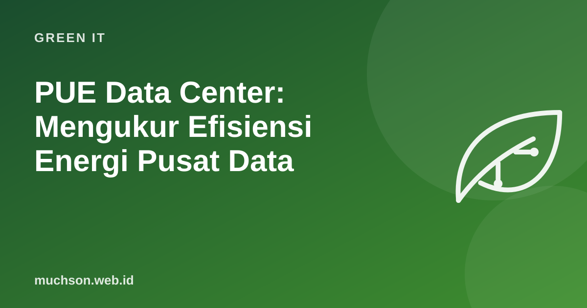

PUE Data Center: Mengukur Efisiensi Energi Pusat Data
Server tidak hanya butuh listrik untuk menghitung. Pendingin, UPS, lampu, dan sistem pendukung juga memakan energi. PUE, singkatan dari Power Usage Effectiveness, adalah metrik yang diperkenalkan The Green Grid untuk mengukur seberapa banyak energi pusat data benar-benar sampai ke peralatan IT.

Rumus PUE
PUE = total energi fasilitas pusat data ÷ energi peralatan IT
Contoh: total 1.500 MWh, peralatan IT 1.000 MWh → PUE = 1,5
Artinya: setiap 1 kWh untuk server, ada 0,5 kWh tambahan untuk pendingin dan lainnya.Berapa angka yang umum?
Survei global Uptime Institute 2024 mencatat rata-rata PUE tahunan yang dilaporkan untuk pusat data terbesar responden sekitar 1,56, dan angka ini relatif datar beberapa tahun terakhir. Pusat data hyperscale modern milik penyedia cloud besar sering melaporkan angka jauh lebih rendah, mendekati 1,1.
Cara menurunkan PUE
Mengapa PUE saja tidak cukup
- PUE tidak mengukur sumber listrik: pusat data dengan PUE 1,2 bertenaga batu bara bisa lebih beremisi daripada PUE 1,5 bertenaga energi terbarukan.
- PUE tidak mengukur efisiensi server: server yang menganggur 90% waktu tetap membuat PUE terlihat baik.
- PUE tidak mengukur air; untuk itu ada WUE (Water Usage Effectiveness).
- PUE bisa terlihat memburuk saat server dibuat lebih efisien, karena pembaginya mengecil.
Lengkapi dengan metrik lain
Gunakan PUE bersama metrik lain: intensitas karbon listrik (gram CO₂ per kWh), WUE, dan utilisasi server.
Tanya jawab
Apakah ruang server kecil di kantor perlu menghitung PUE?
Bermanfaat sebagai gambaran. Untuk ruang kecil, sering kali langkah terbaik justru memindahkan beban ke pusat data atau cloud yang lebih efisien.
Siapa yang menetapkan standar PUE?
PUE dipopulerkan The Green Grid dan kini juga distandarkan dalam ISO/IEC 30134-2.
Apakah AI membuat PUE memburuk?
AI meningkatkan kepadatan daya per rak dan kebutuhan pendinginan. Pusat data AI modern banyak beralih ke pendinginan cair untuk menjaga efisiensi.
Sumber dan bacaan lanjut
- Uptime Institute: Global Data Center Survey 2024
- The Green Grid (pengembang metrik PUE)
- Konsumsi energi AI (artikel terkait)